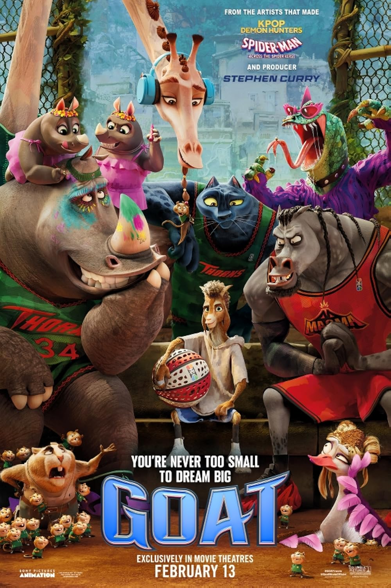

GOAT
Director: Tyree Dillihay, Adam Rosette • Year: 2026 • Genre: Basketball / Comedy / Animation / Action / Adventure / Family / Sport • Runtime: 1hr 40m
First Reaction
Going into this film, I was not excepting much from this film. Not cause it’s an animated film; I love animated films. It’s due to the fact that it was a sports film. Sports films are not my favorite type of films.
Fox wanted to see it so me and his mother decided we would take him to the movie theater to watch it. I trust the kid, for the most part he has pretty good taste.
It ended up being fantastic, good call Fox. It was a fun, action packed story with a lot more heart than I expected. It’s about animals playing a sport called Roar Ball, which is basically basketball with some over-the-top environments and wild action. But the sport itself really isn’t the main point of the story. It’s about not giving up on your dreams and remembering to be a team player.
Review
The story follows Will Harris, voiced by Caleb McLaughlin. He’s most known for his role in stranger things. Will is a young goat who dreams of becoming a professional Roar Ball player. He wants to be like his idol Jett Fillmore voiced by the lovely Gabriella Union. Like a lot of underdog stories, he spends his time practicing, believing in the dream even when nobody else really expects him to make it.
Eventually he gets his shot to get some recognition. The local street court has been visited by the current biggest name in the Roar Ball industry. Mane Attraction voiced by Aaron Pierre. Will get to pay him one on one. This is the moment Will’s skills get noticed by the manager of the Thorns. The team that Will has followed his entire life, and his idol plays on. You can imagine the impact on the character. Once he is on the team, the movie quickly shifts focus in a direction I actually liked a lot. The story starts following Jett his idol more, the Queen, a legendary black panther athlete who is clearly reaching the end of her career.
She’s struggling with something a lot of athletes and professionals deal with — accepting that their time at the top is coming to an end. Over the years she’s become a little selfish, a little disconnected from her team, and she’s forgotten why she started playing in the first place.
What’s interesting is that once the goat reaches his dream, his story is almost complete. The film turns into him helping her rediscover that passion again. It becomes less about chasing a dream and more about remembering why the dream mattered in the first place.
The Sports Element
The sports side of the movie is definitely exaggerated. The Roar Ball games are wild and unrealistic, but that’s kind of the point. The courts themselves are designed around different environments — one on ice that can break apart, another in a volcanic area with lava and shifting ground, and the Thornes have the jungle arena.
It makes the action fun to watch, even if the sport itself isn’t meant to feel like a realistic basketball game. It really gives you that Space Jam feeling. A fun story with heart with just a touch of basketball.
What Worked
The themes in this movie are strong for a family film. It’s about following your dreams, but it’s also about teamwork and remembering the people around you who support you along the way.
Another thing I liked was the message that you can learn from anyone. It doesn’t matter if someone is younger, older, more experienced, or brand new to something — there’s always something you can learn from the people around you.
It’s also just a fun movie to watch with family. The humor is very kid-friendly and there’s plenty of comedic moments that keep the tone light. The scary movie reference done in its own way was pretty funny. You couldn't help but laugh.
Nobody Critics Commentary
“I thought it had a really good cast, and I liked the concept of, you know, Jet was getting older and was having a hard time coping with the fact that she was getting older and was not doing her best. And it basically was an out with the old and in with the new type concept, and I thought it was a really neat concept. And I rate it 8.5 out of 10.”
— Liz
“I thought it was really cool how they played basketball. I really like basketball. And I think it's cool how the main character was a goat because when something, when somebody's really good at something, like at a sport, they call them the goat at it. And I feel like it's really cool how Caleb McLaughlin played the goat, Will, in the movie Goat, and I think that was really cool. What do you rate it? And I rate it a 10 out of 10.”
— Fox
Final Thoughts
GOAT ended up being a pleasant surprise. I didn’t walk into the theater expecting much from it, but it turned out to be a solid animated movie that you walked away from feeling refreshed and willing to work on some of those dreams you may have let slip. No matter how small or big they are.
Rating
8 / 10
Audience Feedback
I’d love to hear your feedback and thoughts on the film. Email me at daniel@nobodycritics.com.